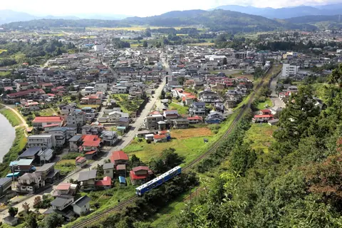
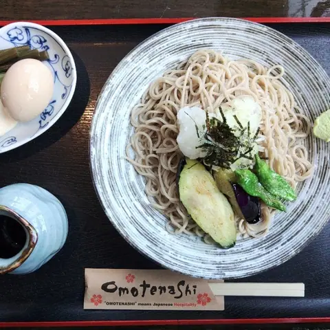
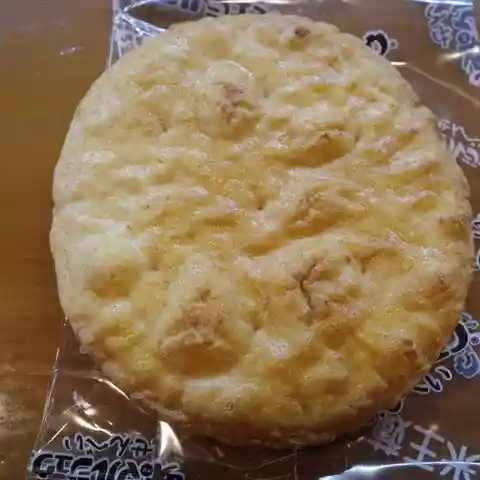
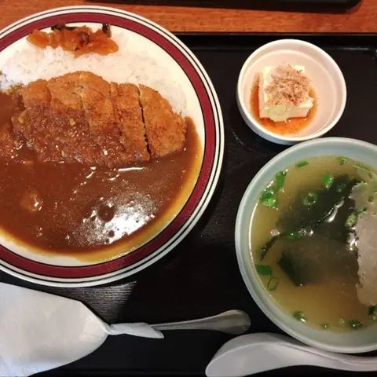
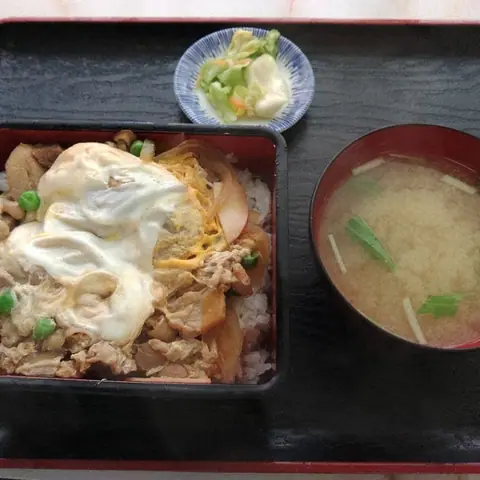
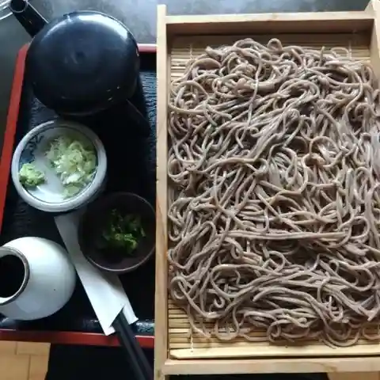
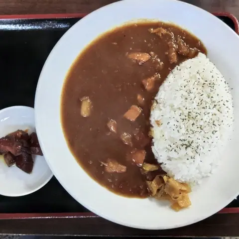
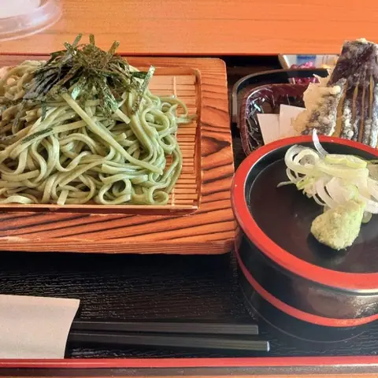
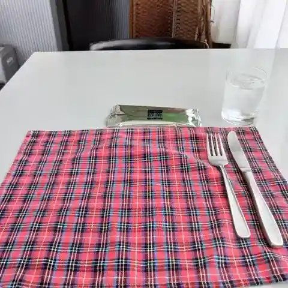
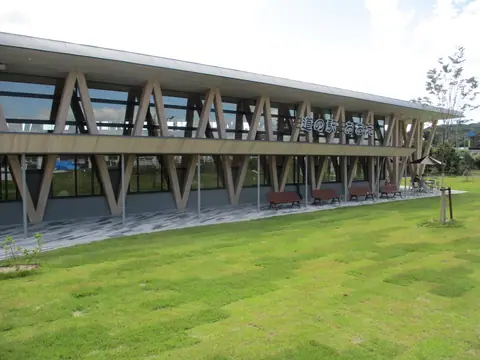

Oe
Oe · Yamagata
Oe
Highlighted on the Yamagata map.

Stay
No listed places to stay in Oe — nearest options in Sagae.
Dining
蕎麦カフェ 閑や

Soba Kafe Hima Ya
Soba restaurant in Oe, Yamagata.
道の駅おおえ

Michi No Eki Ooe
Roadside-station eatery in Oe, Yamagata.
カネミ食堂

Kanemi Shokudou
Soba restaurant in Oe, Yamagata.
あしたば食堂

Ashitaba Shokudou
Shokudo diner in Oe, Yamagata.
川かぜ

Kawa Kaze
Japanese restaurant in Oe, Yamagata.
関野家

Sekino Ie
Shokudo diner in Oe, Yamagata.
レストラン 川かぜ 分店

Resutoran Kawa Kaze Bunten
Udon restaurant in Oe, Yamagata.
桃花水

Touka Mizu
Yoshoku (Western-style) restaurant in Oe, Yamagata.
カゼッタ
Kazetta
Café in Oe, Yamagata.
豊家
Houke
Izakaya in Oe, Yamagata.
中華食堂百番
Chuuka Shokudou Hyaku Ban
Ramen shop in Oe, Yamagata.
道の駅おおえ「コラマガセ」
Michi No Eki Ooe ( Koramagase )
Bakery in Oe, Yamagata.
ウーピー
Uupii
Pasta restaurant in Oe, Yamagata.
藤島屋菓子店
Fujishima Ya Kashi Mise
Japanese sweets shop in Oe, Yamagata.
まちなか交流館 ATERA cafe
Machinaka Kouryuu Kan Atera Cafe
Café in Oe, Yamagata.
寒江菜館
Sagae Saikan
Chinese restaurant in Oe, Yamagata.
すず
Suzu
Shokudo diner in Oe, Yamagata.
らーめん小屋コロポックル
Raamen Koya Koropokkuru
Ramen shop in Oe, Yamagata.
蝶谷 左沢本店
Chou Tani Aterazawa Honten
Japanese sweets shop in Oe, Yamagata.
迎賓館
Geihinkan
Coffee shop in Oe, Yamagata.
ダイニング居酒屋 呑々
Dainingu Izakaya Don (Kurikaesi)
Izakaya in Oe, Yamagata.
やまか茶舗
Yamaka Chaho
Japanese sweets shop in Oe, Yamagata.
割烹 きくや
Kappou Kikuya
Japanese restaurant in Oe, Yamagata.
Sights
Michi-no-Eki Oe

The new Oe roadside station on Route 287, styled after the small boats once used on the Mogami River, with a farm-fresh produce corner and freshly baked bread.
Tateyama Park
Nicknamed 'Japan's No. 1 Park', it sits on a hill north of Aterazawa Station on the site of the Oe clan's Aterazawa Tateyama Castle, overlooking a sweeping bend of the Mogami River and the old Aterazawa townscape.